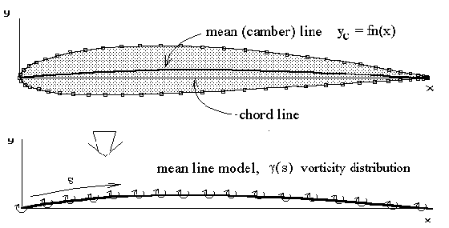
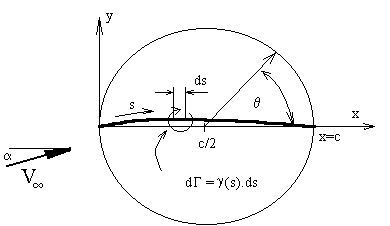

2D THIN AEROFOIL THEORY
A simple solution for general two-dimensional aerofoil sections can be obtained by neglecting thickness effects and using a mean-line only section model. For incompressible, inviscid flow, an aerofoil section can be modelled by a distribution of vortices along the mean line. This is a standard potential flow modelling technique which will give quick and reasonable estimates of lift coefficient and moment coefficient. However, as it models inviscid flow, there will be no estimate of drag coefficient.

The vortex distribution along the mean line forms a continuous vorticity sheet. So rather than considering the strength of point vortices, we consider the strength of the distribution per unit length, $γ(s)$. The distribution function is assumed to take the following form.
$$γ(θ)=2V_∞(A_0\tan(θ/2)+∑_{n=1}^{∞}A_n\sin(nθ))$$
This function is Glauert's approximation and is based on Joukowski transformation results ($A_0$ term) which mainly covers the effect of angle of attack, plus a Fourier series variation ($A_n$ terms) to account for camber. It automatically obeys the Kutta condition with zero vorticity at the trailing edge. It is based on a mapped angular position $θ$ rather than an exact surface location $s$ to allow for ease of integration. The mapping between $s$ and $θ$ is shown below,

The vorticity distribution is thus given as a function of the angular variable $θ$ which is related to chordwise position $x$ as follows,
$$x=c/2+c/2\cos(θ)$$
where $c$ is the chord length. Note that chord-wise position $x$ is used instead of distance along the mean line $s$ for simplicity and is valid in cases where the camber height is not too large. For typical aerofoils with small camber, the difference between these two distances is negligible. This also means small changes in position are equivalent so that $ds≈dx=-c/2\sin(θ)$. With no camber this model becomes equivalent to the Joukowski mapping of a cylinder to a flat plate aerofoil.
The magnitude of the vortex sheet strength must be calculated to complete the mathematical model.
For thin cambered plate models, a boundary condition of zero flow normal to the surface is applied in order to create an equation that can be solved for the required coefficients $A_0,A_1,A_2 $..... to determine the necessary strength of the vortex sheet.
Given an aerofoil geometry, freestream velocity and angle of incidence, the magnitude of the coefficients ($A_0, A_1, A_2,$....) is to be found by solving the boundary condition equation, along the surface. In this case the condition of flow velocity normal to the surface can be more easily formulated in terms of horizontal and vertical velocity components.
$$\text"If "V_n=0\text" then "v/u={dy_c}/{dx}$$
The ratio of vertical $v$ to horizontal $u$ velocity at the surface (mean line) must equal the surface gradient $dy_c\/dx$.
The flow horizontal and vertical velocities are made up of freestream and vortex induced components.
$$u = V_∞\cos(α)+ u_i\text" and "v=V_∞\sin(α)+v_i$$
where $u_i$ and $v_i$ are the horizontal and vertical velocities induced by the vortex sheet. Both of these components will be much less than the freestream velocity, $V_∞$. Also due to the “flatness” of the section $v_i$ will be much larger than $u_i$, so for small angles of incidence, the horizontal vortex induced component can be neglected. If these small angle assumptions are made for the incidence, the boundary condition equation becomes ,
$${dy_c}/{dx}={V_∞\sin(α)+v_i}/{V_∞\cos(α)}≈α+v_i/V_∞$$
The velocity induced vertically $v_i$ at any point on the mean line, $s_i$ can be found by summing up the effects of small individual segments $ds$ of the vorticity distribution.
$$dv_i={dΓ}/{2πr}$$
where $r≈(s-s_i)≈(x-x_i)$, thus
$$v_i=1/{2π}∫_{0}^{c}1/{s-s_i}γ(s).ds=1/{2π}∫_{0}^{c}1/{x-x_i}γ(x).dx$$
where $x_i$ is the location at which the induced velocity is being calculated and $x$ is the chord-wise location of the vortex element. After substitution of for $x, dx,$ and $γ$ in terms of $θ$ the integral becomes,
$$v_i=1/{2π}∫_{π}^{0}1/{c/2\cos(θ)-c/2\cos(θ_i)}γ(θ){(-c/2 sin(θ))}.dθ=1/{2π}∫_{0}^{π}{-1}/{\cos(θ_i)-\cos(θ)}γ(θ)\sin(θ).dθ$$
This result can be integrated to give,
$$v_i=-V_∞(A_0+∑_{n=1}^{∞}A_n\cos(nθ))$$
Substituting this result for induced velocity into the boundary condition equation gives ,
$${dy_c}/{dx}=α-A_0-∑_{n=1}^{∞}An\cos(nθ)$$
The solution for coefficients $A_0,A_1,A_2,$... can now be obtained from this equation. The solution is based on Glauert's integral method. The equation is summed (integrated) along the chord line to find initially coefficient $A_0$. It is then scaled by cosine multiples and again summed along the chord. Each scaled integration will yield one higher order coefficient. $∫\text"(boundary condition equation)".dθ$ along chord line produces,
$$∫_{\text"leading edge"}^{\text"trailing edge"}{dy_c}/{dx}.dθ=∫_{π}^{0}{dy_c}/{dx}.dθ=∫_{π}^{0}(α-A_0-∑_{n=1}^{∞}A_n\cos(nθ)).dθ$$
$$∫_{π}^{0}{dy_c}/{dx}.dθ=-(α-A_0)π+∫_{0}^{π}(∑_{n=1}^{∞}A_n\cos(nθ)).dθ$$
$$∫_{π}^{0}{dy_c}/{dx}.dθ=(A_0-α)π+0$$
$$A_0=α+1/π∫_{π}^{0}{dy_c}/{dx}.dθ$$
The reversed integral limits result from the inverted nature of the relationship between $x$ and $θ$ due to the mapping. Inverting the limits gives,
$$A_0=α-1/π∫_{0}^{π}{dy_c}/{dx}.dθ$$
And similarly integrating the boundary condition multiplied by $\cos(nθ)$ along the chord length gives,
$$A_n=2/π∫_{π}^0{dy_c}/{dx}\cos(nθ).dθ$$
or reversing the limits,
$$A_n=-{2/π}∫_{0}^{π}{dy_c}/{dx}\cos(nθ).dθ$$
Once the vorticity coefficients are found, the lift of a small element of the vortex line can be predicted from the Kutta-Joukowski law. The complete lift is then found by summing all elements of lift from leading to trailing edge.
$$\text"lift"=ρV_∞∑dΓ=ρV_∞∫_0^c γ(s).ds$$
Because of the symmetry of the vorticity function only the first two coefficients $A_0,A_1$ will have a contribution to this integration. Thus lift coefficient per unit span $S= c . 1$ can be found as follows ,
$$C_L={\text"lift"}/{1/2ρV_∞^2(c×1)}=2/V_∞∫_0^1 γ(s).{ds}/c$$
For small camber $ds≈dx$, so that,
$$C_L=2/V_∞∫_{π}^{0}2V_∞(A_0\tan(θ/2)+∑_{n=1}^{∞}A_n\cos(nθ))(-c/2\sin(θ)).{dθ}/c$$
$$C_L=2∫_{0}^{π}(A_0\tan(θ/2)+∑_{n=1}^{∞}A_n\cos(nθ))\sin(θ).{dθ}$$
as terms with $A_n \text" where "n>1$ result in odd function integrations giving 0, thus
$$C_L=2π(A_0+A_1/2)$$
By summing elements of vortex lift which are multiplied by a moment arm based on their distance from the ¼ chord point, the pitching moment coefficient about this point can be found.
$$C_{M1\/4c}={\text"lift x arm"}/{1/2ρV_∞^2(c^2×1)}=2/V_∞∫_0^1 γ(s)(1/4-s/c).{ds}/c$$
$$C_{M1\/4c}=-π/4(A_1+A_2)$$
Note: Many publications use an alternate mapping of $x\/c = (1- ½cos(θ))$ so that $θ=0$ at the leading edge. This will reverse the sign of coefficient $A_2$. This alternate mapping in some cases makes it easier to perform the $dy_c\/dx$ integration.
Reference
"Aerodynamics for Engineering Students" E.L.Houghton & P.W.Carpenter, 4th ED, Edward Arnold, London, 1993.
Software
The following program accepts ASCII data files which consist of a list 2-D aerofoil section coordinates. The format of these aerofoil input data files is the same as that produced by the NACA Section generation program. There is an initial header line, followed by a line giving the number of data points used to describe the aerofoil and then pairs of surface coordinate points ($x,y$). The order of surface points is anti-clockwise, starting at the trailing edge, going back over the upper surface around the nose and then forward along the underside back to the trailing edge. From the surface coordinate data file, the program calculates a set of mean-line coordinate points to use as the mathematical thin-aerofoil model.
For a given angle of incidence, coefficients $A_0,A_1,A_2$.... are calculated using the above equations. Since the mean-line model is a set of straight line segments connecting data points, all integration is done numerically. The program can then predict $C_L$ versus angle and $C_{M1\/4c}$ for the specified aerofoil section. The result is a thin-aerofoil, inviscid flow approximation and therefore has no viscous boundary layer effects. In particular, no stall prediction is possible and the predicted drag coefficient is zero.
Thin-Aerofoil Analysis Program (MS Windows Executable)